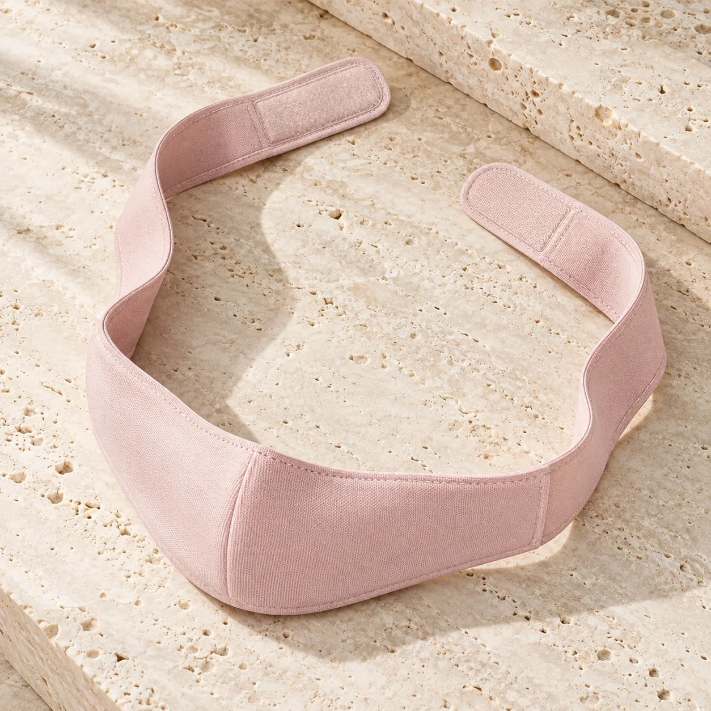
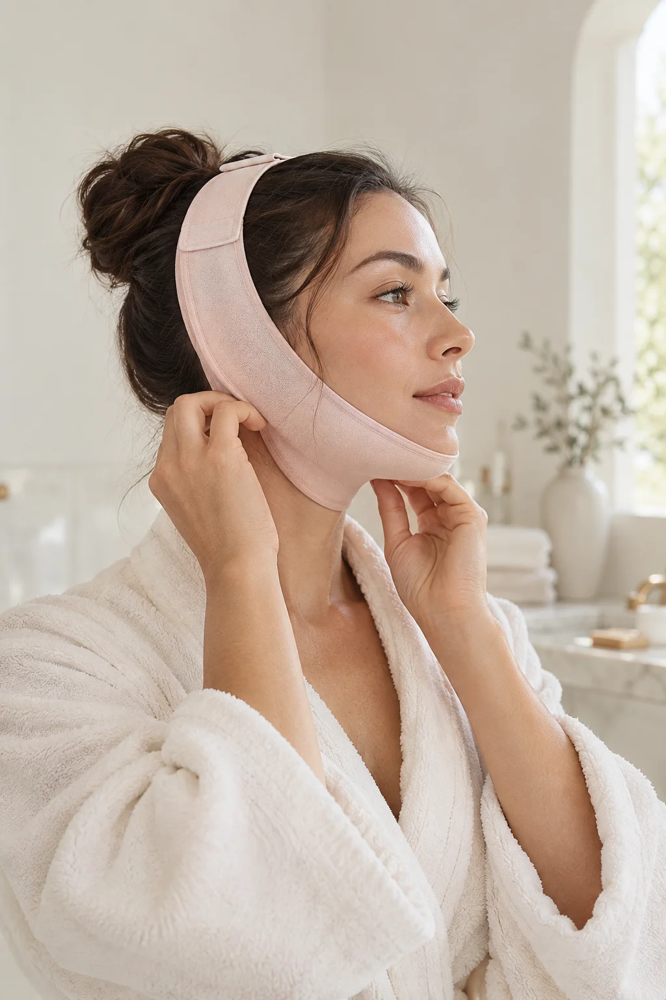

Position
Place the wider part gently beneath your chin.
YOUR MOMENT, YOUR WAY
Meet the adjustable face wrap that makes space for a little more you time.
Discover the wrapA LITTLE PAUSE
Some days, the best part of a routine is simply taking the time for one. The Ritual Wrap is an easy to adjust fabric band designed to sit comfortably beneath the chin while you unwind.
A CLOSER LOOK
A soft fabric band, a comfortable under-chin shape and an adjustable fastening. Nothing more than you need.

THREE EASY MOVES
Wear it as part of a quiet moment at home. Adjust it so it feels comfortable, never tight.
Place the wider part gently beneath your chin.
Bring the ends over your head and secure at a comfortable fit.
Settle into your routine. Remove it if it feels uncomfortable.

IN YOUR OWN TIME
Before a bath. During a slow morning. Whenever your day gives you a moment back. Keep it simple, keep it yours.
Meet the wrapROSELLE STUDIO / EDIT 001
An adjustable fabric face band for a quieter moment in your routine.
Under-chin support shape
Adjustable fastening
Easy to put on and take off
Price, colours, materials, sizing and delivery are set by the seller on AliExpress. Please check the listing before ordering. Editorial images on this page are AI-generated and may differ from the item sold.
GOOD TO KNOW
This is a wearable fabric wrap. We do not claim that it changes facial structure or produces lasting slimming or lifting results.
Adjust it to feel comfortable. Do not wear it so tightly that it causes pain, pressure, numbness or breathing discomfort.
Please check the original seller listing for the current options and specifications before placing an order. Our photographs are illustrative.
The button above opens the original AliExpress listing. Checkout, payment, shipping and returns are handled there.